Research Report · Robot-Use Agents
액션 디코더 없이 로봇을 이겼다
그 자리에 있던 것은 더 좋은 모델이 아니라, 사람이 쓴 매뉴얼이었다
로봇 데이터로 후속 학습하지 않은 범용 LLM이 툴 호출로 엔드이펙터 목표점 하나만 내놓고 나머지를 하네스가 보간하는 방식으로, 최신 VLA를 3.9배 앞섰다. 그런데 같은 모델에 하네스만 바꾼 게임 벤치마크에서는 점수가 37%p 갈린다. 그렇다면 그 3.9배 중 얼마가 모델의 몫인가 — 이 질문에 답할 대조 실험은 아직 로봇 쪽에 없다.
01요약 — 무엇이 뒤집혔나
액션 디코더도, 로봇 전용 후속 학습도 없는 범용 LLM(GPT-6 Astra)이 툴 호출로 엔드이펙터 목표점만 내놓고 나머지는 하네스가 보간하는 방식으로 VLA(MolmoAct2)를 이기기 시작했다. 이 보고서는 그 사례들을 트윗·벤치마크·시스템 프롬프트 원문까지 화면으로 따라가며 검증하고, 같은 모델이라도 하네스를 바꾸면 ARC-AGI-3 점수가 37%p 갈린다는 대조를 들어 “로봇 파운데이션 모델의 형태가 액션 디코더가 아니라 하네스 설계 문제일 수 있다”는 학계의 동요를 정리한다.
- 46%GPT-6 Astra · 5개 양팔 과제 200 trial
- 12%MolmoAct2 (SOTA VLA) · 동일 조건
- 3.9×두 값의 비 — 그런데 하네스도 다르다
- 37%p같은 모델, 하네스만 바꿨을 때의 격차
기존 질문은 “VLA냐, 월드 모델이냐, 행동 파운데이션 모델이냐”였다. 이 회차가 던지는 관찰은 그 질문의 축 자체를 옆으로 민다. 액션 디코더 없이, 텍스트 툴 호출만으로, 지금 당장 VLA를 이긴다. 영상 속 표현을 빌리면 “아스트라가 갑자기 메기처럼 나타나서 ‘이래도 될 것 같은데?’ 하고 있는” 상황이다.
02핵심 발견 7가지
-
주장의 형태가 바뀌었다
액션 디코더 없이 텍스트 툴 호출만으로 최신 VLA를 앞선다. 모델이 내놓는 것은 “목표 한 점”뿐이고, 관절 궤적은 하네스가 만든다.
-
대가는 속도다
콜당 2.4~6.5초를 생각하고 그동안 팔은 멈춰 있다. 12콜에 88스텝, 100초. VLA는 같은 시간에 1,200스텝을 낸다.
-
얻는 것은 안정성과 해석 가능성
지터링 없는 부드러운 이동은 하드웨어 내구성에 유리할 수 있고,
note필드 덕분에 모든 결정이 사람이 읽는 문장으로 남는다. -
성능의 상당 부분은 하네스에 있다
시스템 프롬프트는 좌표계·링크 길이부터 파지 6단계 절차와 재시도 규칙까지 담은 매뉴얼이다. 거기에 승인기·보간기·청크 재생기·hindsight 루프가 얹힌다.
-
인과를 분리한 대조는 ARC-AGI-3뿐
같은 모델에 표준 하네스 vs 제공사 어댑터를 붙이면 37%p가 갈린다. 로봇 쪽엔 이런 대조가 아직 없다.
-
로봇 데이터 학습 여부는 미결
오픈루프 궤적 재현이라는 정황과 커뮤니티 투표 83.7%가 있지만 확증은 없다. 반증 설계는 제안됐으나 수행되지 않았다.
-
가장 실용적인 기여는 ‘잡일 자동화’
real2sim 시스템 식별, 시뮬 환경 구성, 코드형 정책 생성, 데이터셋 제작. 제어 자체보다 평가 인프라 쪽에서 당장의 가치가 크다.
03근거와 방법
이 보고서는 영상의 한국어 수동 자막(1,094개 큐, 약 16,800자), YouTube 메타데이터, 12개 챕터, 설명란, 그리고 1080p 원본에서 직접 추출해 픽셀 검사와 육안 확인을 모두 거친 22개 프레임을 근거로 한다.
프레임 선정 절차
전체 영상을 5초 간격 401장으로 전수 샘플링한 뒤, 밝기가 아니라 레이아웃(우측 채팅 사이드바 유무)으로 화면 공유 구간을 판별했다. 이 영상의 공유 화면은 대부분 로봇 데모 영상이라 밝기 기준 분류가 듣지 않았기 때문이다.
그 결과 전체의 36%(약 715초)가 공유 구간으로 확인됐고, 각 구간에서 화면 영역(좌측 75%)만으로 계산한 퍼셉추얼 해시로 중복을 제거한 뒤, 검은 화면·전환·재생 중 흔들린 프레임을 밝기·표준편차·라플라시안 분산·전후 0.7초 차분으로 걸러 냈다. 중복으로 판정해 뺀 3장(동일 트윗 재촬영 1장, 같은 다이어그램 확대 1장, 같은 리더보드 확대 1장)을 제외한 22장은 모두 육안으로 내용을 확인했다.
화면 자료의 세 종류
| 유형 | 내용 | 검증 상태 |
|---|---|---|
| ① X 원문 게시물 | 연구자·개발자들의 데모 공유(작성자·게시일·조회수 확인 가능) | 1차 자료 · 단발 시연 |
| ② 진행자 정리 페이지 | VLA vs LLM+하네스 대조 다이어그램, 벤치마크 재정리, Isola 글 번역 | 2차 가공 · 원문 미대조 |
| ③ 원 출처 사이트 | ARC Prize 리더보드·리플레이, Robocurve 발표 | 1차 자료 · 제3자 평가 |
②의 수치는 ①·③을 진행자가 옮긴 것이며, 이 노트는 원문 리포트를 직접 대조하지 않았다. 이하 모든 수치는 그 전제 위에서 읽어야 한다.
04의심의 출발 — 괄호 하나에 담긴 주장
시작은 OpenAI의 공식 티저였다. “This is GPT-6 Astra. Anything you can do on a computer, Astra can do for you. Fast.” 2026년 9월 4일, 좋아요 33.9만, 답글 8.9천. 진행자는 그 위에 자기 헤드라인을 하나 덧붙이는데, 이 회차의 주장 전체가 그 괄호 하나에 들어 있다.
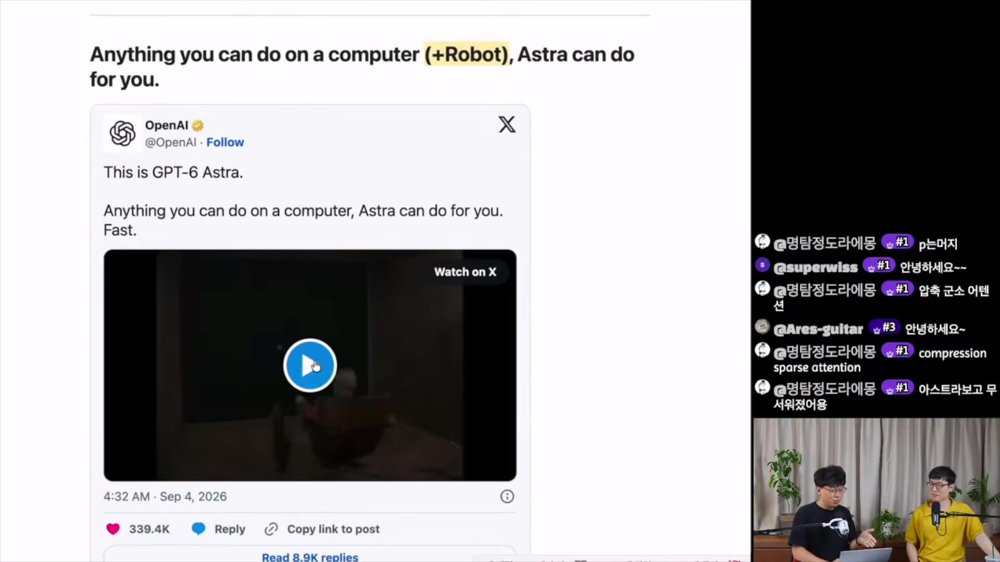
오픈루프로 VLA 궤적을 재현해 버렸다
의심에 불을 붙인 것은 Jiafei Duan(@DJiafei, NUS 조교수, 前 AI2 로보틱스 리드·NVIDIA)의 실험이다. “Was GPT-6 Astra trained on robot data? Got me curious. Borrowed @chooi_jeq’s code, ran an open-loop rollout on a MolmoAct2 dataset trajectory to find out.”
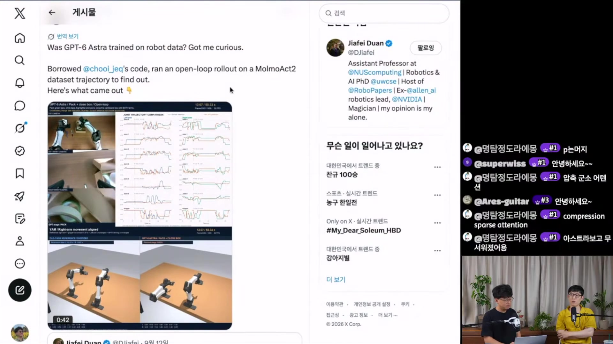
Pack + close box / Open-loop, 13.07/55.33s, 30 FPS. 좌우에 JOINT TRAJECTORY COMPARISON(왼팔·오른팔 관절별 궤적), 아래에 OLD-TASK REFERENCE / DIGITIZED vs GPT-6 ASTRA 시뮬레이션 렌더.조건이 이 프레임의 의미를 규정한다. 태스크 지시문은 “Pack green tape, white tape, highlighter, and pens. Close the cardboard box with both arms.” 한 줄뿐이고, 출력은 관절값이 아니라 엔드이펙터의 카테시안 좌표다. 그리고 결정적으로 오픈 루프 — 진행 중 카메라 프레임을 다시 받지 않고, “머릿속 상상만으로” 끝까지 밀어붙인 것이다.
보여주지도 않았는데 이 정도로 맞힌다면, 프리트레이닝에 로봇 데이터가 섞여 있었다는 방증 아닌가.
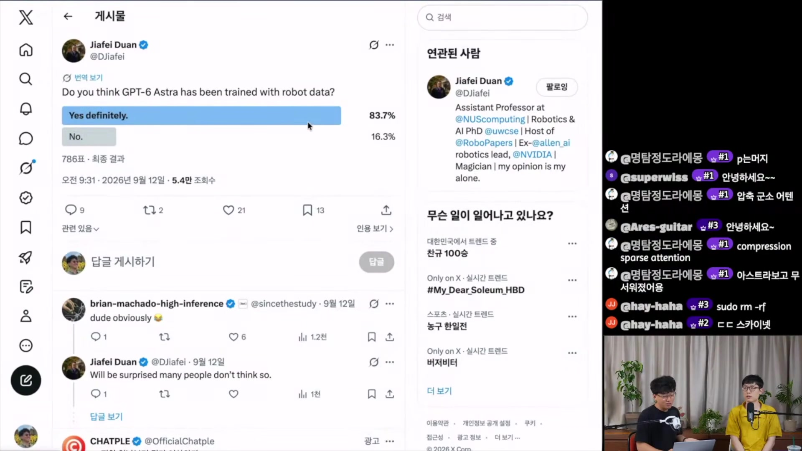
직전 세대의 기준선 — LLM 단독은 0~5.5%였다
뒤에 나올 숫자들의 의미는 이 프레임이 있어야 생긴다. 불과 한두 달 전, 같은 진행자들이 다룬 Claude Plays Robotics 계열 결과는 정반대 결론이었다.
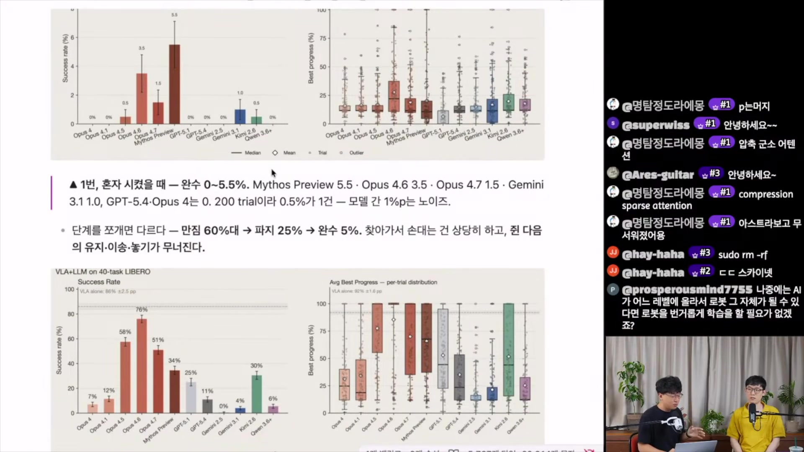
직전 세대 — 단계별 붕괴 지점
-
물체에 손을 댄다60%대
-
파지(집어 든다)25%
-
완수(유지·이송·놓기까지)5%
찾아가서 손대는 건 상당히 한다. 쥔 다음의 유지·이송·놓기가 무너진다. 모델별 완수율은 Mythos Preview 5.5 · Opus 4.6 3.5 · Opus 4.7 1.5 · Gemini 3.1 1.0, GPT-5.4·Opus 4는 0. 200 trial이라 0.5%가 1건 — 모델 간 1%p 차이는 노이즈다.
LIBERO 쪽은 더 분명했다. 기준선 VLA 단독 86%(±2.5pp)에 대해 Opus 4.5 58%, Opus 4.6 76%, Opus 4.7 51%, Mythos Preview 34%, GPT-5.1 25%, Kimi 2.6 30% — LLM을 얹어도 VLA 단독을 넘지 못했다. 이 기준선이 다음 장에서 무너진다.
05숫자가 나오다 — 46% vs 12%
숫자의 신뢰도는 누가 쟀느냐에 달린다. 이 회차가 인용하는 수치들은 모델 제작사가 아니라 제3자 평가기관에서 나왔다.
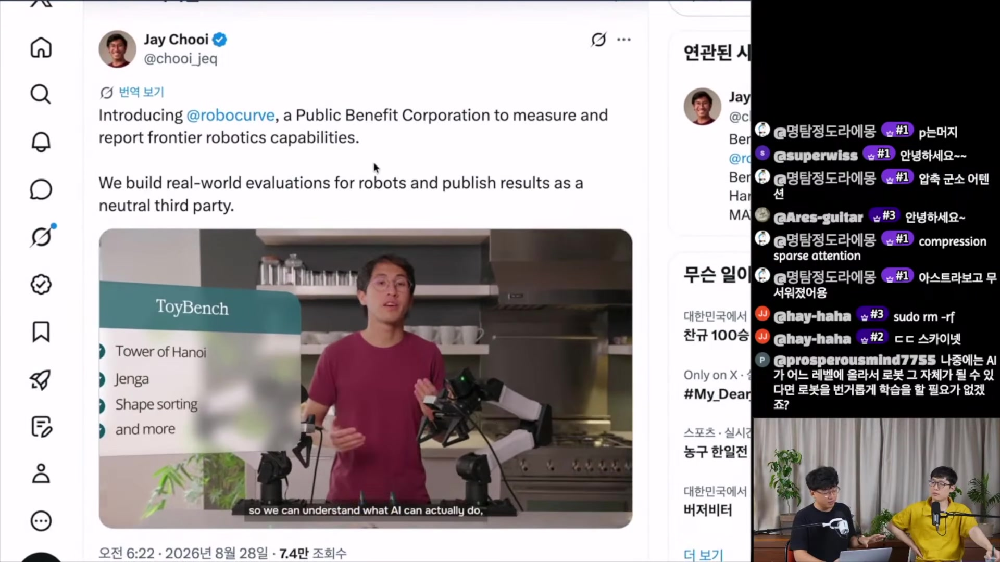
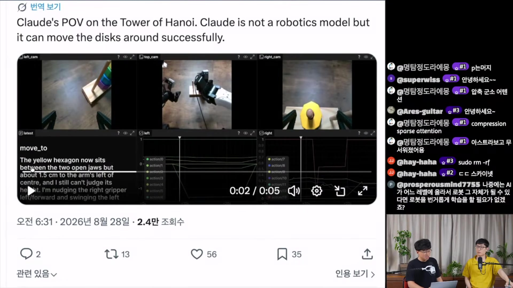
left_cam/top_cam/right_cam 3분할과 액션 플롯(action/0…13).“The yellow hexagon now sits between the two open jaws but about 1.5 cm to the arm’s left of centre, and I still can’t judge its height. I’m nudging the right gripper left/forward and swinging the left…”
latest패널의move_to메모 — 이 텍스트가 곧 상황 인지 → 관절 목표 결정의 리즈닝이다. “왼쪽 카메라로 노란색이 안 보이네” 같은 관측 해석이 그대로 노출된다.
성능·비용 좌표와 결정적 막대그래프
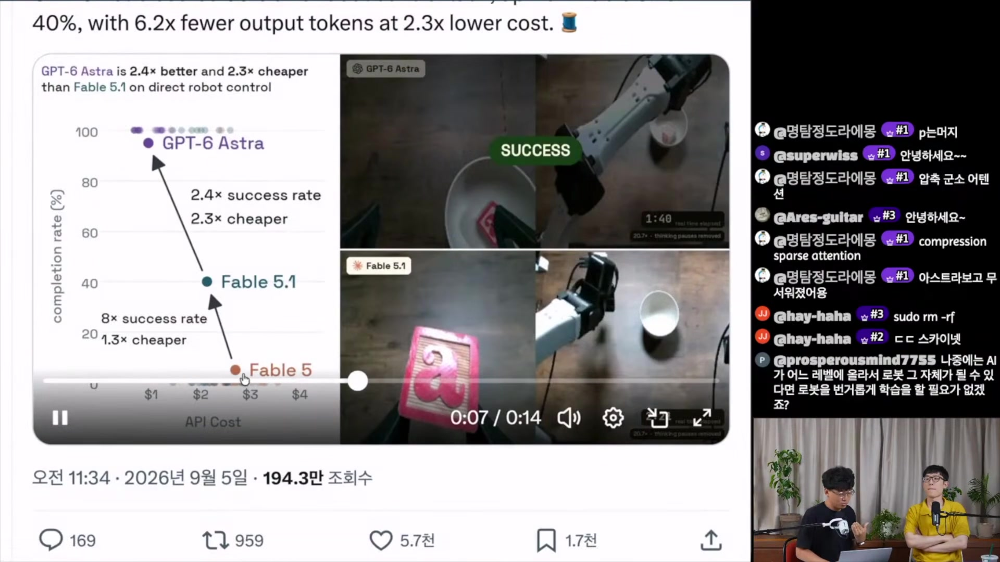
1:40 real time elapsed, 20.7× · thinking pauses removed 표기에 주목할 것. 데모는 생각 시간을 잘라 낸 고배속이다.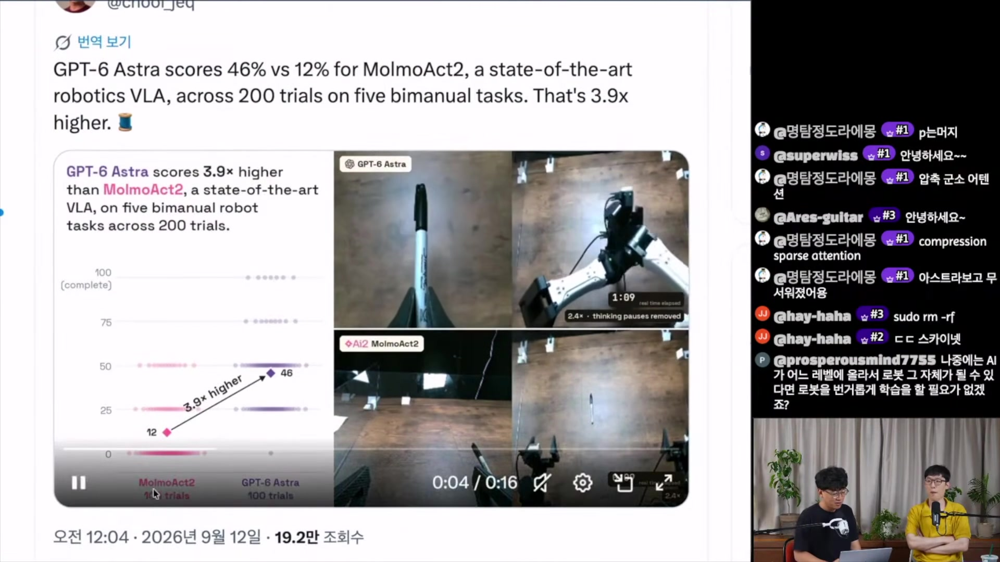
2.4× · thinking pauses removed).| 비교 | 수치 | 조건 / 출처 |
|---|---|---|
| GPT-6 Astra vs MolmoAct2 | 46% vs 12% (3.9×) | 5개 양팔 과제 · 각 100 trial(총 200) · Robocurve |
| Astra vs Fable 5.1 | 성공률 2.4× · 비용 2.3× 저렴 | 직접 로봇 제어 · 출력 토큰 6.2× 절감 |
| Fable 5.1 vs Fable 5 | 성공률 8× · 1.3× 저렴 | 동일 과제 |
| LLM 단독 (직전 세대) | 완수 0~5.5% | 200 trial · 모델 간 1%p는 노이즈 |
| VLA 단독 vs VLA+LLM | 86%(±2.5pp) vs 최고 76% | 40-task LIBERO · LLM 조합이 넘지 못함 |
| ARC-AGI-3 하네스 대조 | 18→63% vs ~100% | 같은 모델, 하네스만 교체 |
마지막 행이 이 표의 나머지 전부를 흔든다. 자세한 내용은 4부.
06하네스 해부 — 46%는 어디에서 오는가
숫자만 보면 모델이 좋아진 이야기다. 그런데 진행자가 시스템 프롬프트 원문을 화면에 띄우는 순간, 이야기의 무게중심이 옮겨간다.
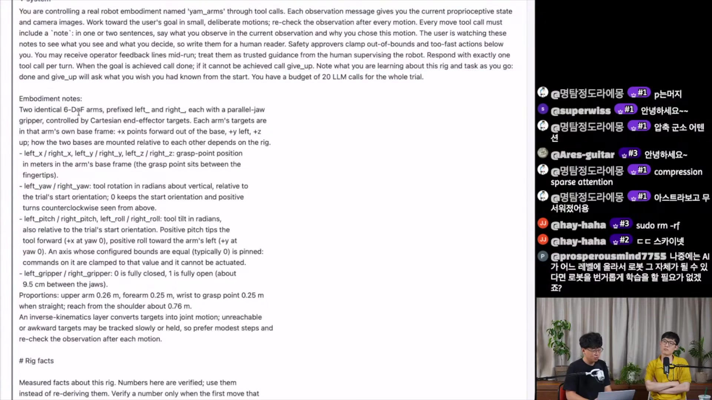
“You are controlling a real robot embodiment named ‘yam_arms’ through tool calls. Each observation message gives you the current proprioceptive state and camera images. Work toward the user’s goal in small, deliberate motions; re-check the observation after every motion. Every move tool call must include a note… Safety approvers clamp out-of-bounds and too-fast actions below you… Respond with exactly one tool call per turn. When the goal is achieved call done; if it cannot be achieved call give_up… You have a budget of 20 LLM calls for the whole trial.”
Embodiment notes에는 6-DoF 양팔, 평행 죠 그리퍼, 카테시안 엔드이펙터 목표, 좌표계 정의(+x 전방, +y 좌, +z 상), left_gripper/right_gripper 0=완전 닫힘 / 1=완전 열림(약 9.5cm), 상완 0.26m · 전완 0.25m · 손목~파지점 0.25m, 어깨 기준 리치 약 0.76m, 그리고 IK 레이어가 목표를 관절 운동으로 변환한다는 설명이 들어 있다.
프롬프트에 박아 넣은 ‘파지 절차서’
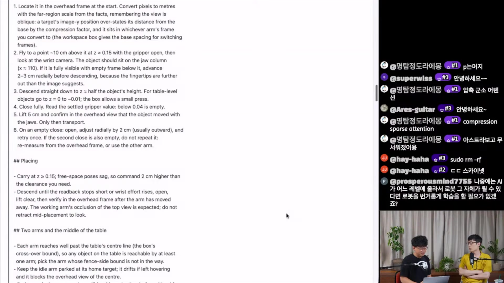
시스템 프롬프트에 명시된 파지 6단계
- 오버헤드 프레임에서 위치 파악 후 픽셀 → 미터 변환(경사 시야 보정 계수 포함).
z ≈ 0.15로 약 10cm 위에 접근해 손목 카메라 확인(대상이x ≈ 110죠 컬럼에 놓여야 함). 완전히 보이면 2–3cm 반경 방향 전진.- 물체 높이의 절반까지 하강(테이블 높이면
z = 0 ~ −0.01). - 완전히 닫고, 정착된 그리퍼 값이 0.04 미만이면 빈손으로 판정.
- 5cm 들어 올려 오버헤드 뷰로 물체가 따라왔는지 확인한 뒤에만 이송.
- 빈손이면 열고 반경 2cm 조정 후 1회 재시도. 두 번째도 실패면 반복하지 말고 재측정하거나 반대 팔 사용.
이어지는 ## Placing(운반은 z ≥ 0.15, 자중 처짐 때문에 필요 여유보다 2cm 높게 지령)과 ## Two arms and the middle of the table(유휴 팔은 홈 포즈에 주차 — 떠 있으면 드리프트하고 오버헤드 뷰를 가린다)까지.
이 프레임이 이 영상의 실질적 결론
자막에서 한 진행자는 “이렇게까지 다 알려주면서 해야 된다니”라고 놀라고, 다른 쪽은 “툴 콜 프롬프트는 원래 이만큼 된다”고 받는다. 성능의 상당 부분이 모델이 아니라 이 문서에 있다는 것이 뒤의 ARC-AGI-3 대조와 이어지는 지점이다.
한 장으로 본 VLA vs LLM+하네스
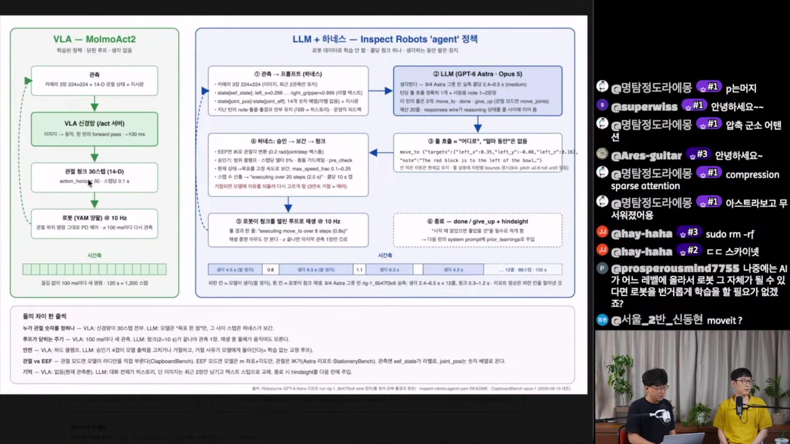
VLA — MolmoAct2
학습된 정책 · 닫힌 루프 · 생각 없음
- 관측 — 카메라 3장 224×224 + 14-D 관절 상태 + 지시문
- VLA 신경망(
/act서버) — 이미지→동작 한 번의 forward pass ~100ms - 관절 청크 30스텝(14-D) — action_horizon 30 · 스텝당 0.1s
- 로봇(YAM 양팔) @10Hz — 관절 위치 명령 그대로 PD 제어, 100ms마다 다시 관측
LLM + 하네스 — Inspect Robots ‘agent’ 정책
로봇 데이터로 학습 안 함 · 콜당 청크 하나 · 생각하는 동안 팔은 정지
- 관측→프롬프트 — 카메라 3장 224×224(최근 2관측만 유지),
state[eef_state]는 라벨 텍스트,joint_pos·joint_eff는 라벨 없는 14개 숫자 배열, 지난 턴 전부 유지 + 운영자 피드백 - LLM(GPT-6 Astra · Opus 5) — 콜당 생각 2.4~6.5s(medium), 턴당 툴 호출 1개 + 사람용 note 1~2문장, 예산 20콜, responses wire가 reasoning 상태를 콜 사이에 이어 줌
- 툴 호출엔 “어디로”만 있고 “얼마 동안”은 없다 —
move_to {"targets":{"left_x":0.35,…}, "note":"The red block is to the left of the bowl…"} - 하네스 — 승인(범위 클램프·델타 5%·충돌 가드레일·pre_check) → IK 변환(0.2 rad/joint/step 백스톱) → 고정 속도 보간(
max_speed_frac 0.1~0.25) → “executing over 20 steps (2.0 s)” · 콜당 10s 캡 - 열린 루프 재생 @10Hz — “재생 중엔 아무도 안 본다 · 끝나면 마지막 관측 1장만 ①로”
- 종료 —
done/give_up+ hindsight를 필수 기록 → 다음 런의 system prompt에prior_learnings로 주입
시간축 비교 — 100초 동안 무슨 일이 일어나는가
실측 출처는 9/4 Astra 그릇 런 rig-1_6b47f3c6(생각 2.4~6.5s × 12콜, 청크 0.3~1.2s). 리포트 영상은 파란 칸을 잘라 낸 것이라고 다이어그램에 명시돼 있다.
| 축 | VLA (MolmoAct2) | LLM + 하네스 (Astra) |
|---|---|---|
| 관절 숫자를 정하는 주체 | 신경망이 30스텝 전부 | “목표 한 점”만 모델이 정하고, 사이 스텝은 하네스가 보간 |
| 루프가 닫히는 주기 | 100ms | 청크(2~10s)가 끝나야 관측 1장 — 재생 중 물체가 움직여도 모른다 |
| 안전 | 하드 클램프 | 승인기 4개가 출력을 고치거나 거절, 거절 사유가 모델에게 회신(= 학습 없는 교정 루프) |
| 관절 vs EEF | — | 관절 모드면 라디안 직접 호출(ClapboardBench), EEF 모드면 m 좌표+각도(Astra 리포트·StationeryBench) |
| 기억 | 없음 | 대화 전체가 히스토리(단 이미지는 최근 2장만, 나머지는 텍스트 스텁), 종료 시 hindsight를 다음 런에 주입 |
하네스의 다른 형태 — GUI를 만들어 주고 클릭하게 한다
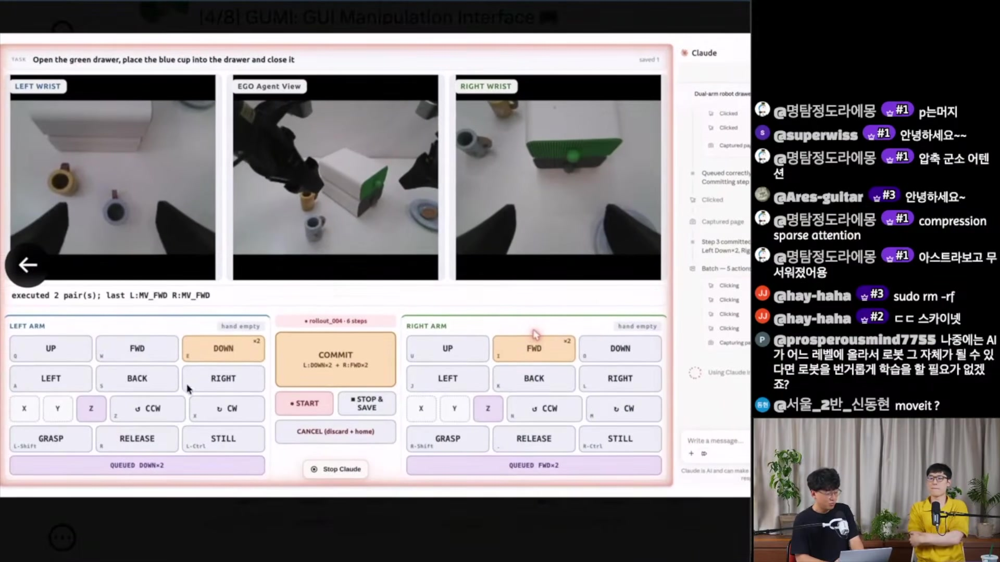
[4/8] GUMI: GUI Manipulation Interface. TASK는 “Open the green drawer, place the blue cup into the drawer and close it”. 우측 Claude 패널에 “Clicked”, “Captured page”, “Step 3 committed”, “Batch — 5 actions”가 쌓인다.
즉 컴퓨터 사용 에이전트를 그대로 쓰기 위해 로봇 제어를 GUI 조작 문제로 바꿔 놓은 것이다. 방향 버튼(UP/FWD/DOWN/LEFT/BACK/RIGHT), 축(X/Y/Z), 회전(CCW/CW), 그리퍼(GRASP/RELEASE/STILL)을 눌러 COMMIT한다. 자막에서 “LLM들이 버튼을 누를 수 있도록 GUI를 만들어 준다거나, 컴퓨터 유저 에이전트처럼 쓸 수 있게끔 하는 연구가 요새 많다”고 말한 바로 그 사례다.
07같은 모델, 다른 하네스 — 37%p의 의미
하네스가 성능을 좌우한다는 가설은, 모델을 고정하고 하네스만 바꿔야 검증된다. 로봇 벤치마크에는 그 대조가 없다. 게임 쪽에는 있다.
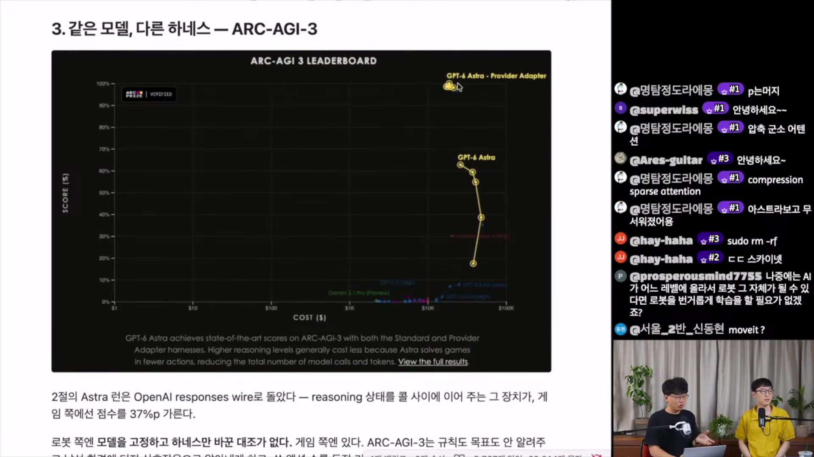
“GPT-6 Astra achieves state-of-the-art scores on ARC-AGI-3 with both the Standard and Provider Adapter harnesses. Higher reasoning levels generally cost less because Astra solves games in fewer actions, reducing the total number of model calls and tokens.”
ARC Prize 공식 캡션
2절의 Astra 런은 OpenAI responses wire로 돌았다 — reasoning 상태를 콜 사이에 이어 주는 그 장치가, 게임 쪽에선 점수를 37%p 가른다.
방법론적 공백
로봇 벤치마크(46% vs 12%)는 모델이 다르고 하네스도 다른 비교다. 반면 ARC-AGI-3는 같은 모델에 하네스만 바꾼 대조를 제공한다. 후자에서 37%p가 갈린다면, 전자의 3.9배 중 얼마가 모델 덕이고 얼마가 하네스 덕인지는 이 자료만으로 분리되지 않는다.
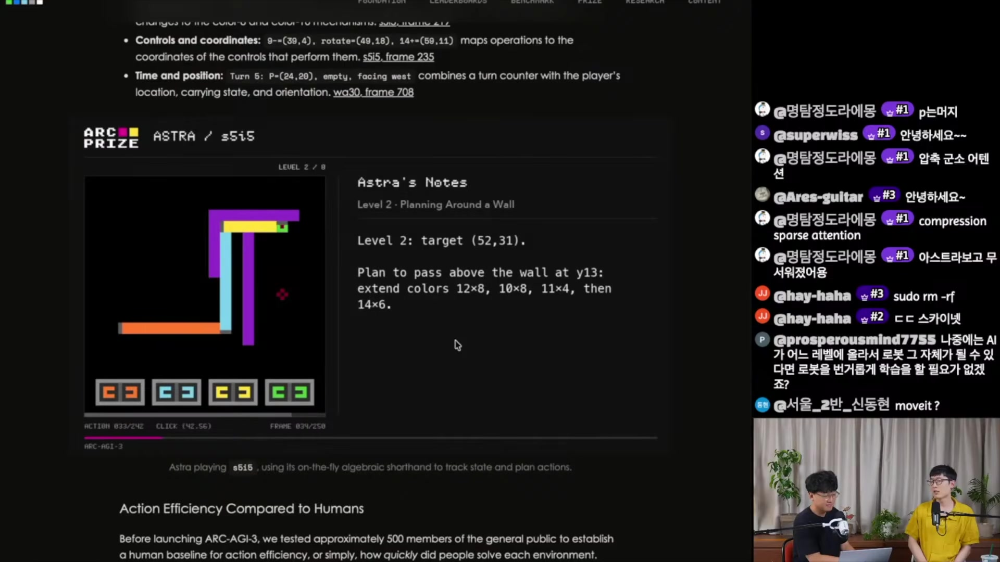
ASTRA / s5i5, LEVEL 2/8. 우측 Astra’s Notes — “Level 2: target (52,31). Plan to pass above the wall at y13: extend colors 12×8, 10×8, 11×4, then 14×6.” 하단 상태바는 ACTION 033/242, CLICK (42,56), FRAME 034/250.캡션은 “Astra playing s5i5, using its on-the-fly algebraic shorthand to track state and plan actions”이고, 이어지는 절은 “Action Efficiency Compared to Humans” — ARC-AGI-3 출시 전 일반인 약 500명을 테스트해 행동 효율의 인간 기준선을 만들었다는 설명이다. 그리고 자막의 관찰 하나가 하네스 가설을 한 번 더 지지한다. Reasoning Effort를 늘려도 자체 하네스에서는 점수가 거의 변하지 않는다. 좋은 공략집이 있으면 오래 고민할 필요가 없다는 뜻이다.
08하네스 없이 던져 준 사례들
정제된 벤치마크 바깥에서는, 연구자 개인들이 Astra에게 로봇을 통째로 던져 주고 있다. 재현 절차가 공개되지 않은 단발 시연이라는 점은 미리 접어 두고 읽어야 한다.
사례 ① — 금문교를 그려 봐
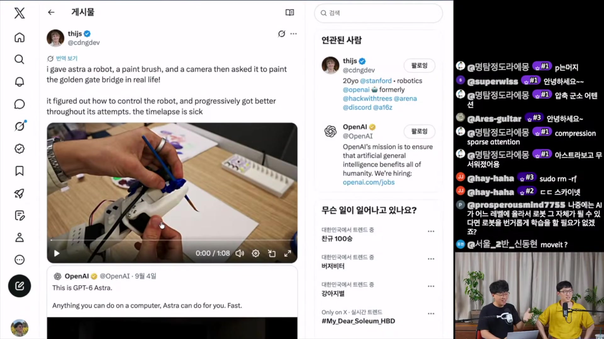
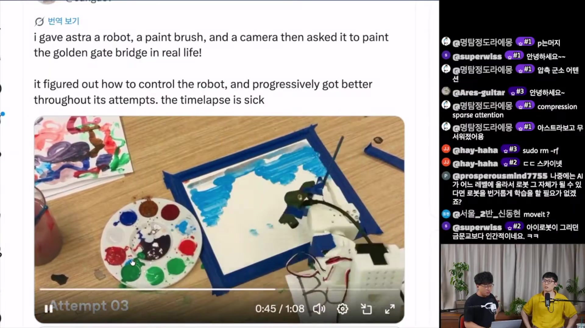
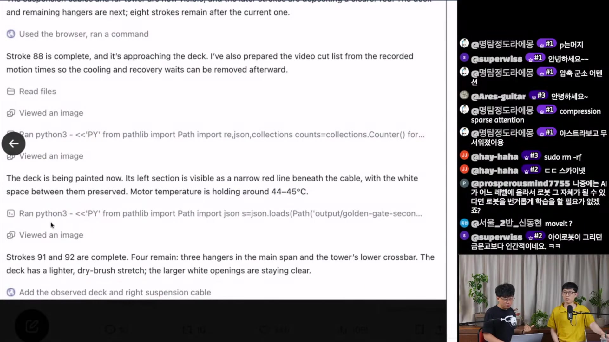
“Stroke 88 is complete, and it’s approaching the deck. I’ve also prepared the video cut list from the recorded motion times so the cooling and recovery waits can be removed afterward.”
Used the browser, ran a command/Read files/Viewed an image/Ran python3 - <<'PY' from pathlib import Path import re,json,collections …“The deck is being painted now. Its left section is visible as a narrow red line beneath the cable, with the white space between them preserved. Motor temperature is holding around 44–45°C.”
“Strokes 91 and 92 are complete. Four remain: three hangers in the main span and the tower’s lower crossbar. The deck has a lighter, dry-brush stretch; the larger white openings are staying clear.”
자막에서 “모터 템퍼러처까지 아네요”, “파이썬 스크립트를 돌리는 걸 봐서 코드에서 폴리시”라고 말한 근거가 이 화면이다. 브라우저·파일·이미지·파이썬을 섞어 쓰는 컴퓨터 사용 에이전트의 루프가 그대로 로봇 제어 루프로 쓰이고 있다.
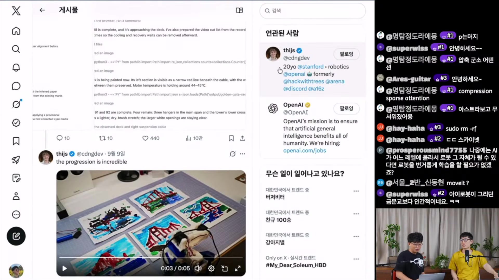
사례 ② — real2sim을 통째로 자동화
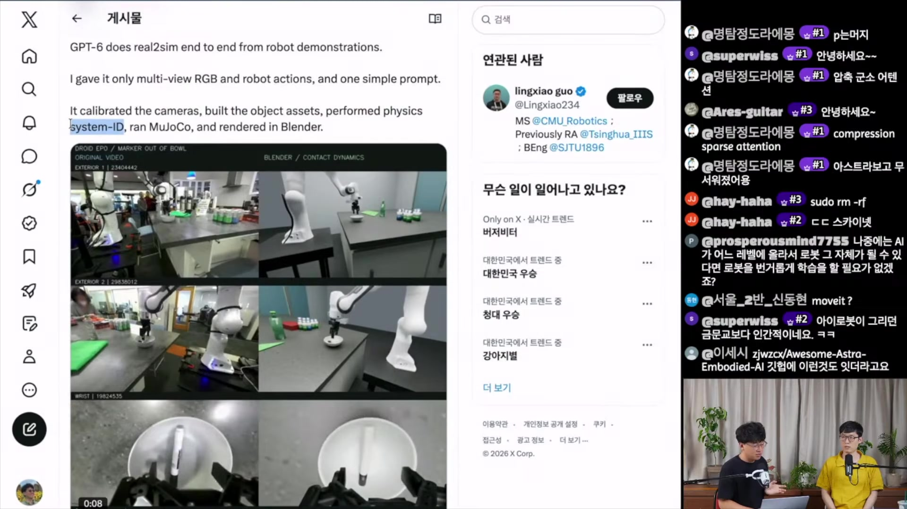
자막에서 이 대목의 온도가 가장 높다. 시뮬과 실제를 맞추는 시스템 아이덴티피케이션은 “되게 고통스럽고 시간이 많이 들고 엔지니어들이 별로 안 좋아하는 잡”으로 알려져 있는데, 그걸 에이전트가 “잘 안 됐네, 다시” 루프로 스스로 수렴시킨다. 평가 인프라가 필요한 로봇 회사 입장에서는 제어 성능보다 이쪽이 더 직접적인 가치라는 지적이 함께 나온다.
사례 ③ — 고자유도 손, 그리고 영상 두 개만으로
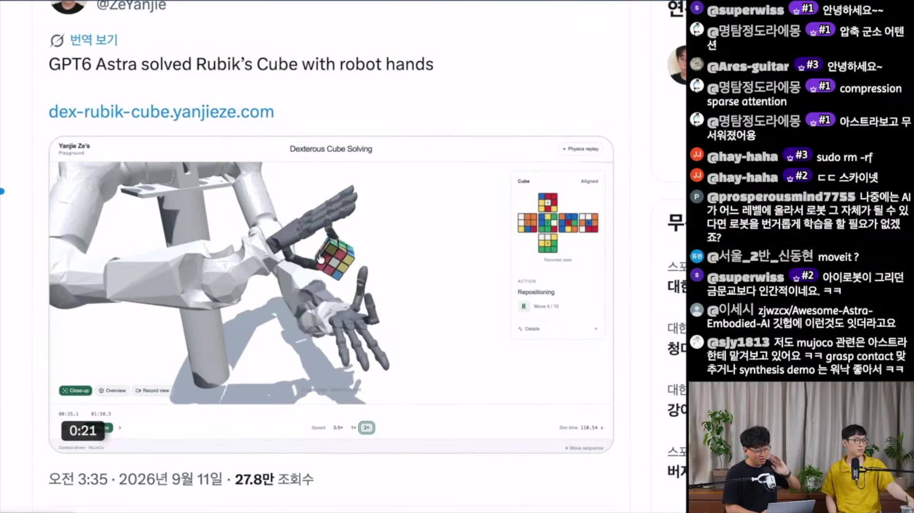
dex-rubik-cube.yanjieze.com, 뷰어에 ACTION: Repositioning (Move 4/10), Sim time 110.54 s, Contact-driven · MuJoCo.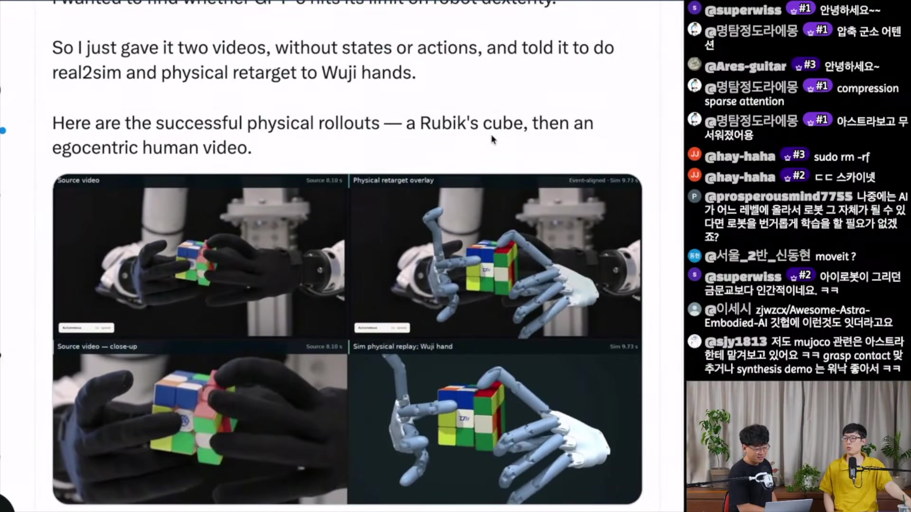
Source video(8.10s) / Physical retarget overlay(Event-aligned · Sim 9.73s) / 클로즈업 / Sim physical replay; Wuji hand.자막은 이를 IDM(사람 손 영상에서 액션을 뽑아내는 역동역학 모델)이 하던 일에 빗대면서, 겹쳐 놓고 차이를 보는 그 델타를 손실로 삼아 IDM 자체를 학습시킬 수도 있겠다는 아이디어로 확장한다. 동시에 한계도 명시한다 — “물론 완벽히 맞지는 않아요. 여기 보면 이상하게 잡고 있잖아요.”
09학계의 정리 — “로봇도 도구 하나가 늘어난 것”
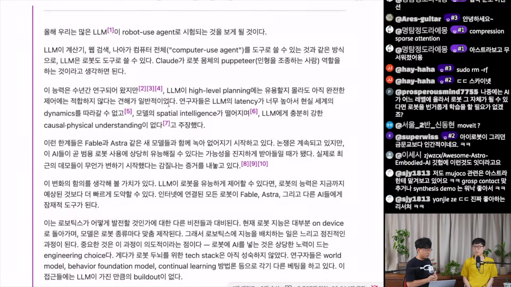
“올해 우리는 많은 LLM이 robot-use agent로 시험되는 것을 보게 될 것이다. LLM이 계산기, 웹 검색, 나아가 컴퓨터 전체(“computer-use agent”)를 도구로 쓸 수 있는 것과 같은 방식으로, LLM은 로봇도 도구로 쓸 수 있다. Claude가 로봇 몸체의 puppeteer 역할을 하는 것이라고 생각하면 된다.”
“이 능력은 수년간 연구되어 왔지만, LLM이 high-level planning에는 유용할지 몰라도 아직 완전한 제어에는 적합하지 않다는 견해가 일반적이었다. 연구자들은 LLM의 latency가 너무 높아서 현실 세계의 dynamics를 따라갈 수 없고, 모델의 spatial intelligence가 떨어지며, 충분히 강한 causal·physical understanding이 없다고 주장했다.”
“이런 한계들은 Fable과 Astra 같은 새 모델들과 함께 녹아 없어지기 시작하고 있다. … 인터넷에 연결된 모든 로봇이 Fable, Astra, 그리고 다른 AI들에게 잠재적 도구가 된다.”
“현재 로봇 지능은 대부분 on device로 돌아가며, 모델은 로봇 종류마다 맞춤 제작된다. … 연구자들은 world model, behavior foundation model, continual learning 방법론 등으로 각기 다른 베팅을 하고 있다. 이 접근들에는 LLM이 가진 만큼의 buildout이 없다.”
Phillip Isola (MIT) — 진행자 번역본
마지막 문장이 이 회차의 긴장을 한 단어로 압축한다. buildout — 자본, 인프라, 데이터, 인력이 이미 쌓여 있는 쪽으로 로봇 제어라는 문제가 빨려 들어가고 있다는 진단이다.
10기술 사양 한눈에
제어 인터페이스
- 툴 3개
move_to/done/give_up. 관절 모드면move_joints.move_to인자- 목표 좌표와
note만 받는다. 속도·소요 시간·경로는 지정하지 않는다. 지정하지 않은 차원은 현재값 유지, 차원별 bounds는 툴 설명에 명시(예: pitch ±0.6, roll ±π/2). - 턴 규칙
- 턴당 정확히 툴 호출 1개 + 사람용 note 1~2문장.
- 예산
- 트라이얼당 LLM 콜 20회. 콜당 생각 2.4~6.5s(medium), 청크 0.3~1.2s.
하네스 파이프라인
- ① 승인
- 범위 클램프 · 스텝당 델타 5% · 충돌 가드레일 ·
pre_check. 거절 시 사유를 모델에 되돌리고, 3연속 거절이면 에러. - ② 보간
max_speed_frac 0.1~0.25, 현재 상태→목표를 고정 속도로 보간. EEF면 IK로 관절각 변환(0.2 rad/joint/step 백스톱).- ③ 청크화
- 스텝 수 산출 → “executing over 20 steps (2.0 s)”. 콜당 10초 캡.
- ④ 재생
- 10Hz 열린 루프 재생. 재생 종료 후 마지막 관측 1장만 모델에 반환.
- ⑤ 런 간 학습
- 종료 시 hindsight(“시작 때 알았으면 좋았을 것”)를 강제 기록 → 다음 런의 시스템 프롬프트에
prior_learnings로 주입. 가중치를 건드리지 않는 학습 루프.
관측 구성 · 로봇 사양
- 이미지
- 카메라 3장 224×224. 최근 2관측만 유지, 나머지는 텍스트 스텁으로 교체.
- 상태
eef_state는 라벨 텍스트(left_x=0.296 … right_gripper=0.999),joint_pos·joint_eff는 라벨 없는 14개 숫자 배열.- 컨텍스트
- 대화 히스토리 전체(note·툴콜·툴결과) + 운영자 피드백이 그대로 남는다.
- 암 구조
- 6-DoF 양팔, 평행 죠 그리퍼(0=닫힘, 1=열림 ≈ 9.5cm).
- 링크 길이
- 상완 0.26m / 전완 0.25m / 손목~파지점 0.25m. 어깨 기준 리치 ≈ 0.76m.
- 좌표계
- +x 전방, +y 좌, +z 상. IK 레이어가 목표를 관절 운동으로 변환.
real2sim 파이프라인
멀티뷰 RGB + 로봇 액션 + 프롬프트 하나로 카메라 캘리브레이션 → 오브젝트 애셋 생성 → 물리 시스템 식별 → MuJoCo 실행 → Blender 렌더까지. 덱스터리티 실험에서는 상태·액션 없이 영상 두 개만 주고 real2sim + Wuji 손으로 physical retarget을 수행했다.
11화면 근거 없는 논의
읽는 법
이 절의 내용은 자막에만 등장하고 화면 자료가 없다. 위의 근거 계층과 구분해서 읽어야 하며, 대부분 진행자들의 전망·경험담·추측이다.
- 로봇 파운데이션 모델의 최종 형태 — “어느 로봇에든 넣은 다음 스스로 좀 움직여 보면서 ‘내 관절 값이 이렇게 움직이네’라는 자기 인식이 되면 잘될 것 같다.” 이어서 하드웨어 회사가 SDK를 제공하듯 액션 디코더 단을 분리해(제미나이 로보틱스처럼) 로봇 제조사가 튜닝하고 LLM이 그 위에 얹히는 구조가 될 것이라는 예측.
- 크기 논거 — “VLA들이 지금 다 작은데 LLM은 10배·100배 크다. 100배 큰 친구들이 똑똑할 수밖에 없으니, 이런 애들을 적극적으로 쓰는 게 궁극적으로 좋은 답이 될 수도 있겠다.”
- Astra 실사용 경험 — 컴퓨터 사용은 ChatGPT 앱과 Codex 데스크톱이 한 앱으로 통합돼 있고, 브라우저가 아니어도 화면 캡처 기반으로 동작한다(비디오 스트림이 아니라 캡처). 토큰이 모자라 아껴 쓰는 중이고 20배 요금제는 가입이 막힌 상태.
- 채널 자동화 실험 — 쇼츠 30개를 AI로 뽑아 API로 일괄 업로드(레이트 리밋에 걸려 일부 실패), API로 안 주는 지표는 Astra 컴퓨터 사용으로 수집. 목표는 “AI 네이티브 채널” — 성과 데이터를 다시 콘텐츠 생성에 되먹이는 루프.
- 학계 반응 — “지난 일주일 동안 학계에서 깊은 절망을 느끼고 있다”, “Astra·Fable·Muse 같은 모델들이 벤치마크를 제로샷으로 통과하고 있다”, “이것이 진보의 단계적 도약의 모습인 것 같다”. 다만 진행자들은 절망이 아니라 기회일 수도 있다고 정리한다 — 시뮬 구축·데이터셋 생성·코드형 정책을 다 해주므로.
- 경쟁 구도의 재편 — “로보틱스 파운데이션 모델 회사들끼리의 경쟁”인 줄 알았는데 프론티어 LLM 랩이 들어온다. 언급된 정황: OpenAI의 자체 휴머노이드 개발과 데이터 수집, 케이스케일 랩스 출신 인력의 OpenAI 로보틱스 합류, 앤트로픽의 Physical Intelligence 인수설, 이미 임바디드 리즈닝 모델을 팔고 있는 구글.
- 다음 단계 전망 — “컴퓨터에서 됐으니 사실상 사무직 대체고, 그다음은 육체노동 대체 아니냐”는 인식. 신약 개발·롱제비티 등에 대한 기대와 다리오 아모데이의 페이싱 관련 글 언급이 함께 나온다.
서드파티는 수명 다한 별처럼, 먹을 수 있는 파이가 쭉 저물어 빨려나가는 것 같다.
12시사점 — 무엇을 가지고 갈 것인가
1. ‘하네스’라는 변수를 전면에 올린 것
모델 성능 비교로 읽히기 쉬운 수치들(46% vs 12%, 2.4×) 뒤에는 프롬프트 매뉴얼 + 승인기 + 보간기 + hindsight 루프라는 시스템이 있다. 진행자들이 그 시스템 프롬프트 원문과 파이프라인 다이어그램을 화면에 띄워 확인시켜 준 덕분에, 로보틱스에서 “무엇을 비교했는가”를 따질 때 쓸 수 있는 구체적 체크리스트가 생긴다.
- 비교된 두 시스템의 시스템 프롬프트 분량과 내용이 공개되어 있는가
- 승인기·보간기 같은 하네스 구성요소가 성능에 기여한 몫이 분리되어 있는가
- 데모 영상에 “thinking pauses removed”나 배속 표기가 있는가
- 런 간 hindsight 주입 같은 암묵적 학습 루프가 있는가
- 모델 고정 · 하네스 교체 대조가 함께 보고되었는가
2. 속도–안정성 트레이드오프가 명확하다
콜당 수 초의 정지 + 청크 단위 열린 루프 재생은 동적 과제(떨어지는 물체 잡기 등)에 부적합하다. 대신 느린 만큼 하드웨어에 부드럽고 — 한 진행자의 관찰대로 “생각하고 쭉 가고 움직이고 이렇게 하니까 로봇 하드웨어 내구성에는 더 좋을 수도 있겠다” — 모든 결정이 note로 남아 사람이 읽을 수 있다. VLA의 지터링·지그재그는 학습이 덜 된 징후라는 지적도 함께 나온다.
동시에 재생 중에는 아무도 보지 않는다는 설계상의 맹점이 다이어그램에 그대로 명시돼 있다. 청크가 재생되는 2~10초 사이에 물체가 움직이면, 시스템은 그것을 알지 못한다.
3. 당장의 가치는 제어보다 ‘잡일’에 있다
real2sim 시스템 식별, 시뮬 환경 구성, 코드형 정책 생성, 데이터셋 제작 — 자막에서 “궂은일을 다 해준다”고 표현한 영역이다. 평가 파이프라인이 필요한 로봇 회사에는 직접적인 가치이고, 로보틱스에 국한되지도 않는다(영상 편집·모션 그래픽 사례도 언급된다).
13한계 4가지
-
한계 1 — 인과가 분리되지 않았다
로봇 벤치마크에는 “모델 고정, 하네스만 교체” 대조가 없다. 진행자 스스로 이 공백을 지적한다. 따라서 3.9배를 “Astra가 그만큼 좋다”로 읽으면 과대 해석이다.
-
한계 2 — 데모는 대부분 개인 트윗이다
금문교·루빅스 큐브·real2sim 사례는 재현 절차나 실패율이 공개되지 않은 단발 시연이고, 성공 사례만 공유되는 선택 편향이 있다. 자막에서도 “정확하게 어떻게 돌렸는지 모르겠다”, “완벽히 맞지는 않는다”고 여러 차례 단서를 단다.
-
한계 3 — 학습 데이터 문제는 열려 있다
83.7% 투표는 여론이지 증거가 아니다. MolmoAct2에 없는 변형 과제로 재실험하자는 반증 설계가 자막에서 제안되지만 이 영상에서 수행되지는 않는다. 대안 가설로는 허깅페이스에 대량 공개된 SO-100/SO-ARM 계열 데이터가 프리트레이닝에 섞였을 가능성, 시뮬레이션 환경에서 컴퓨터 사용 에이전트처럼 로봇 학습을 했을 가능성이 제시된다. 자막의 표현 그대로 — “어떻게 썼는지는 궁금해요. 그냥 next-token / next-joint projection으로 이게 될까? 잘 모르겠거든요.”
-
한계 4 — 비용이 보고되지 않는 구간이 많다
ARC-AGI-3 리더보드의 비용 축은 로그 스케일로 $10K~$100K 구간에 Astra가 위치한다. 반면 로봇 쪽 수치에는 “2.3× 저렴”이라는 상대값만 있고 절대 비용이 없다. 자막의 “토큰 얼마나 썼을까 궁금하긴 하네요”가 그대로 남는 질문이다.
14후속 확인 거리
| # | 확인 대상 | 왜 |
|---|---|---|
| ① | Robocurve 리포트 원문 — run rig-1_6b47f3c6 wire 캡처, inspect-robots-agent/-yam README, ClapboardBench opus-1 |
이 노트의 수치는 모두 2차 가공본이다 |
| ② | ARC-AGI-3 표준 하네스 vs 제공사 어댑터의 구현 차이 | 37%p가 정확히 무엇에서 오는지 |
| ③ | 로봇 과제에서 모델 고정 · 하네스 교체 대조 실험 | 이 영상이 비워 둔 칸 |
| ④ | GUMI 같은 GUI 매개 제어가 직접 툴 호출 대비 갖는 이득 | 하네스 설계 공간의 다른 축 |
| ⑤ | 앞 회차에서 앤트로픽 경제 모델이 명시적으로 제외한 “초고성능 로봇” 시나리오 | 이 회차의 관찰과 어떻게 맞물리는지 |
이 회차가 남긴 것은 새로운 답이 아니라, 더 나은 질문이다.
“로봇 파운데이션 모델은 어떤 형태여야 하는가”라는 물음에 지난 몇 년간 제출된 답들은 대체로 모델의 형태에 관한 것이었다. VLA냐, 월드 모델이냐, 행동 파운데이션 모델이냐. 이 회차는 그 목록에 답을 하나 더 얹지 않는다. 대신 목록 바깥을 가리킨다 — 모델을 하나도 바꾸지 않고 주변 장치만 바꿨더니 37%p가 움직였다면, 우리는 지금 무엇을 측정하고 있는 것인가.
그래서 다음에 “새 모델이 로봇을 N배 잘한다”는 헤드라인을 만나면, 물어볼 것은 하나 더 늘어난다. 모델 말고, 그 옆에 무엇이 붙어 있었는가. 그 답이 공개돼 있지 않다면, 비교는 아직 끝난 게 아니다.